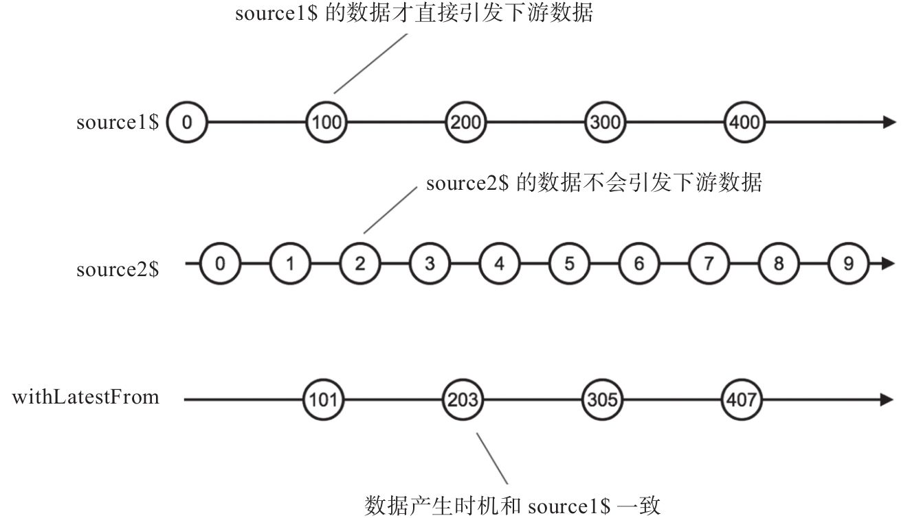

withLatestFrom的功能类似于combineLatest，但是给下游推送数据只能由一个上游Observable对象驱动。
之前介绍的合并类操作符，包括concat、merge、zip和combineLatest，都有静态操作符和实例操作符两种形式，而且作为输入的Observable对象地位都是对等的；到了withLatestFrom这里，不再是这样了，withLatestFrom只有实例操作符的形式，而且所有输入Observable的地位并不相同，调用withLatestFrom的那个Observable对象起到主导数据产生节奏的作用，作为参数的Observable对象只能贡献数据，不能控制产生数据的时机。
下面是使用withLatestFrom的代码示例：
import {Observable} from 'rxjs/Observable';
import 'rxjs/add/observable/timer';
import 'rxjs/add/operator/withLatestFrom';
import 'rxjs/add/operator/map';
const source1$ = Observable.timer(0, 2000).map(x => 100 * x);
const source2$ = Observable.timer(500, 1000);
const result$ = source1$.withLatestFrom(source2$, (a,b)=> a+b);
result$.subscribe(
console.log,
null,
() => console.log('complete')
);
其中，source1$每隔2秒钟产生一个数据，通过map的映射，实际产生的数据序列为0、100、200……
source2$从第500毫秒时刻开始，每隔1秒钟产生一个从0开始的递增数字序列。
result$由source1$调用withLatestFrom产生，第一个参数是source2$，这样source2$的数据会是result$的一个输入。注意，withLatestFrom第二个函数，功能和zip以及combineLatest的可选参数一样，用于定制产生的数据对象形式。在这里，我们把source1$和source2$产生的数据相加，可以方便展示。
产生下游数据流result$中数据的步骤如下：
1）在第0毫秒时刻，source1$吐出数据100，source2$没有吐出数据，所以没有给下游产生数据。
2）在第500毫秒时刻，source2$吐出数据0，但是source2$并不直接触发给下游传递数据，所以依然没有给下游产生产生数据。
3）在第1500毫秒时刻，source2$吐出数据1，同样不会给下游产生数据。
4）在第2000毫秒时刻，source1$吐出数据100，这个数据会加上source2$吐出的最后一个数据1，产生传给下游的数据101。
5）在第2500毫秒时刻，source2$吐出数据2，不会给下游产生数据。
6）在第3500毫秒时刻，source2$吐出数据3，不会给下游产生数据。
7）在第4000毫秒时刻，source1$吐出数据200，这个数据加上source2$吐出的最后一个数据3，产生传给下游的的数据203。
依此类推。
上面程序的输出结果如下，每隔2秒钟输出一行：
101 203 305 407
在输出中，所有输出的百位数由source1$贡献，个位数由source2$贡献。可以看到，source2$虽然产生的是连续递增的整数序列，但并不是所有数据都进入了最终结果，很明显2和4就没有出现在最终结果的个位；而source1$产生的数据，除了第一个0，其余全部出现在了最终结果的百位。
通过图5-9展示的弹珠图可以更清楚地看到这个过程。

图5-9 withLatestFrom的弹珠图
当source1$产生第一个数据0时，withLatestFrom的另一个输入Observable对象source2$还没有产生数据，所以这个0也被忽略了。
随后source2$产生了0和1，但是source2$产生的数据并不会让withLatestFrom产生数据，只不过更新了source2$的“最新数据”；当source1$产生数据100时，withLatestFrom发现所有输入的Observable对象都有“最新数据”了，这时候就会吐出合并的数据100+1，也就是101。
依此类推，source2$产生的2和3也不会引发withLatestFrom产生数据，而且，在source1$的下一个数据200产生之前，3会盖过2成为source2$的“最新数据”，所以2根本没有机会出现在withLatestFrom的输出结果中。